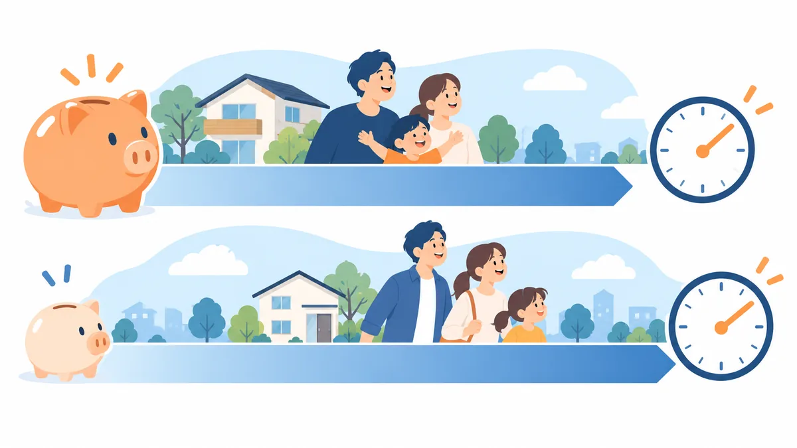

COLUMN
頭金ゼロで購入する場合の毎月の返済と総支払額の見方。3 パターン比較

頭金を入れるかどうかで、毎月の返済額と 35 年間の総支払額はどれだけ変わるのでしょうか。この記事では、物件価格 3,000 万円を例に、頭金 0 円・300 万円・600 万円の 3 パターンを比較し、頭金ゼロを選ぶときに確認しておきたい点を整理します。今週の親記事 頭金がない場合の住宅購入の資金計画 の関連記事です。
この記事について
- 計算例は、適用金利 年 1.5%、返済期間 35 年、元利均等返済を仮定した目安です。実際の金利・条件は金融機関ごとに異なります。
- 頭金の有無で金利が変わる金融機関もあります。この記事の例では同じ金利で比較しています。
3 パターンの比較
| 頭金 0 円 | 頭金 300 万円 | 頭金 600 万円 | |
|---|---|---|---|
| 借入額 | 3,000 万円 | 2,700 万円 | 2,400 万円 |
| 毎月の返済額 | 約 9.2 万円 | 約 8.3 万円 | 約 7.3 万円 |
| 35 年間の総返済額 | 約 3,860 万円 | 約 3,470 万円 | 約 3,090 万円 |
| うち利息 | 約 860 万円 | 約 770 万円 | 約 690 万円 |
| 頭金＋総返済額 | 約 3,860 万円 | 約 3,770 万円 | 約 3,690 万円 |
頭金 300 万円で、毎月の返済額は約 9,000 円下がり、利息の総額は約 90 万円減ります。頭金 600 万円なら、毎月約 1.9 万円、利息は約 170 万円の差です。
頭金ゼロが向いている場合
- 手元資金を予備費や既存のお借入れの整理に使ったほうが、家計全体で有利な場合
- 金利が低い時期で、利息の差より手元資金を残す価値が大きい場合
- 住宅ローン控除の対象額が大きいほうが有利になる場合（借入額が多いほど控除の上限に近づく）
頭金を入れたほうがよい場合
- 返済負担率が上限に近く、毎月の返済額を下げる必要がある場合
- 頭金の有無で適用金利が変わる金融機関を使う場合（頭金 1〜2 割で金利が下がる例がある）
- 予備費を残したうえで、まだ余裕がある場合
頭金ゼロを選ぶときに確認する 4 点
1. 予備費が残るか
頭金ゼロでも、引越し・家具家電と、生活費 3 か月分程度の予備費は手元に必要です。ここを削って頭金に回すのは順番が逆です。
2. 諸費用をどう出すか
諸費用（物件価格の 5〜10%）を住宅ローンに含められるかで、必要な手元資金が大きく変わります。詳しくは 諸費用の内訳と目安 をご覧ください。
3. 物件の価値と借入残高の関係
頭金ゼロだと、購入直後は借入残高が物件の価値を上回りやすくなります。数年以内に売却する可能性がある場合は、この点が影響します。長く住む前提なら、時間とともに解消していきます。
4. 既存のお借入れとの兼ね合い
頭金ゼロで、さらにカードローンなどの返済が続く場合、返済負担率の計算に両方が入ります。手元資金を頭金ではなく既存のお借入れの整理に使うほうが、返済負担率を下げる効果が大きいことが多いです。考え方は明日の記事「手元資金をお借入れの整理と頭金のどちらに使うか」で詳しく扱います。
まとめ
- 頭金 300 万円で毎月約 9,000 円、利息約 90 万円の差。決定的な差ではないが小さくもない。
- 頭金ゼロの可否は、予備費と諸費用の出所で決まる。
- 既存のお借入れがあるなら、手元資金は頭金より先にそちらの整理に使うほうが効くことが多い。